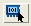

Access with: View > Finder, then choose “Unconnected Net Instances” for “What type of search?”
Searches in: Layout
Requires: PHDB. See Mask SVDB Directory in the SVRF Manual.
The search type “Unconnected Net Instances” on the Finder tab finds cell instances that have a target net unconnected to a reference net in a reference cell. The reference cell is specified in the “Search in which cell” field.
Item |
Description |
|---|---|
Reference Net: |
Select a layout net from the dropdown list1. |
Target Cell: |
Select a target cell for the connection. |
Target Net: |
Select a net in the target cell from the dropdown list1. |
Layout Icon  |
Select net in layout viewer. |
Show Highlight Menu |
Click to display a menu with options for highlighting and displaying information about the object. |